Every feature of the library, one page each — open any card to inspect it live.
Zero runtime dependencies; each page just loads the built IIFE bundle
(window.JSNGraph.NGraph) with a plain <script> tag.
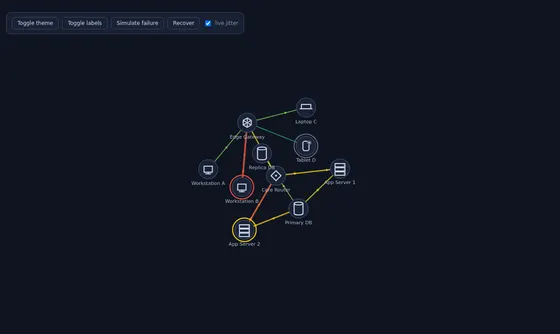
force layoutThe classic view: devices self-organize, edges colour by load with animated traffic dots, live jitter, theme/label toggles and a simulated failure.
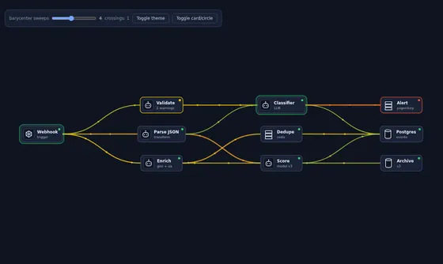
layered · curveSugiyama-style columns (workflow-editor look) with curved edges. A slider drives the barycenter sweep count so you can watch crossings fall as sweeps increase.
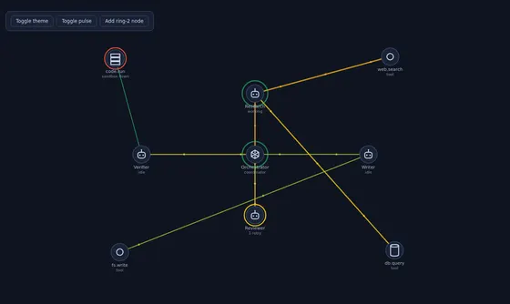
radial layoutDeterministic hub-and-ring arrangement via node.ring — agent/gateway
icons, pulsing status glow and sublabels, the agent-flow style.
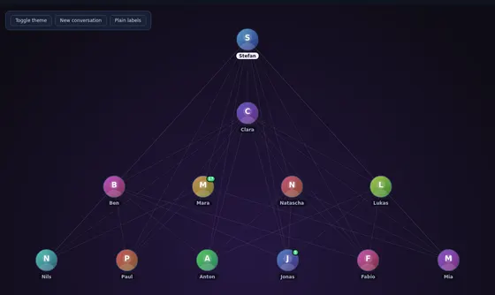
layered · downPeople as avatar nodes (node.image) in top-down rows, unread-count
badges, name pills and a dense, quiet mesh that lights up per conversation.
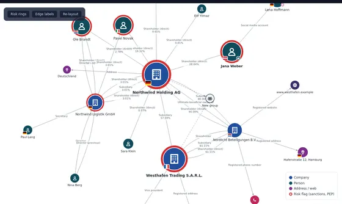
force · light · lanesCompanies, people and registered details: filled glyph nodes, risk rings, flag and glyph badges, two-line edge labels and parallel relations fanned out into lanes.
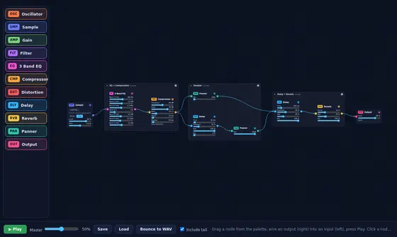
workflow editor · Web AudioThe workflow editor as a Web Audio patcher: sliders inside the nodes, bypass and collapse, groups, palette drag (drop onto a wire to insert), live playback and a WAV bounce.
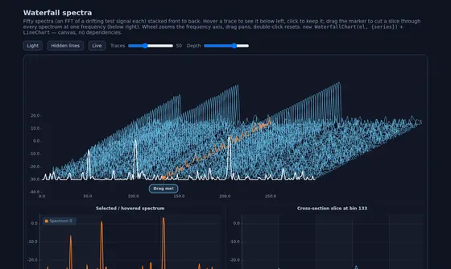
chart · canvasFifty FFT spectra stacked front to back: hover and click a trace, drag a marker to cut a slice through all of them, zoom the frequency axis, hidden lines, live mode.
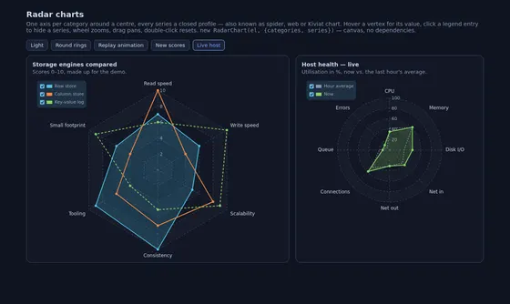
chart · canvasSpider / web charts: dashed polygon or round rings, filled and dashed profiles, legend toggles, vertex tooltips, grow-in animation and a live-updating host-health radar.
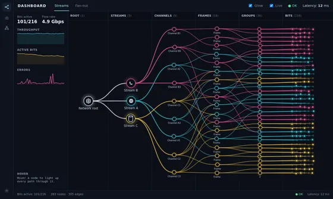
layered · glow · lineageNeon multi-column flows: column headers, stream-coloured branches, a bit-grid column, side labels, a fan-in to one sink — hover any node to light every path through it.
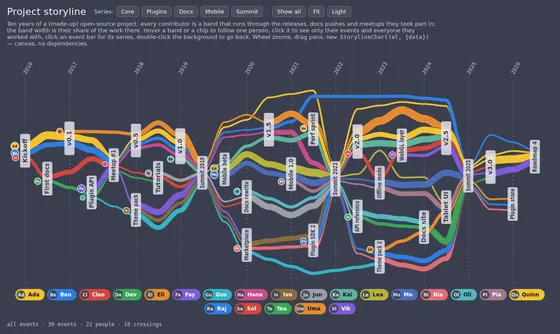
chart · storylineWho was where, when: contributors as bands through ten years of releases and meetups, bundled per event, width = share of the work; hover to follow one, click to focus a person or a series.
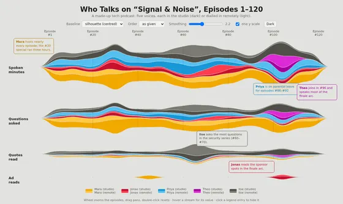
chart · canvasSmoothed streams around a centre line in small multiples on one scale — silhouette, wiggle, stacked or 100 %, inside-out order, guide marks, pinned notes, a paired legend that hides layers, x zoom.
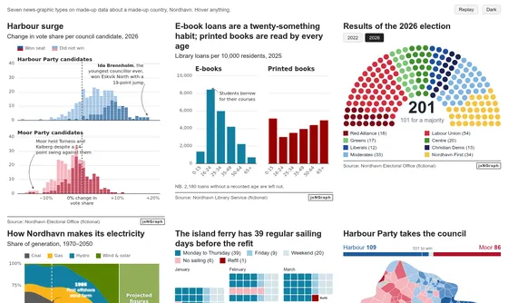
chart + widget · newsroomSeven news-graphic types on a made-up country: a unit histogram, small-multiple bars, a parliament hemicycle, a 100 % area with a projection, a tile calendar, a majority bar and a choropleth of 201 districts.
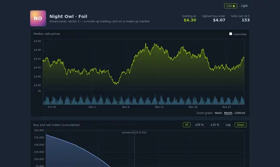
chart · livePrice history on a calendar time axis with Week / Month / Lifetime zoom, volume bars and an overview strip; below it the cumulative order book as two staircases around the spread, updating live.
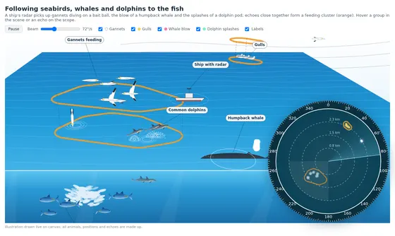
chart · radar scopeA live ocean cut-away — gannets diving on a bait ball, tuna, a humpback whale blowing, dolphins leaping — and the ship's radar scope with a sweeping beam, fading echoes and orange feeding clusters; hover links both.
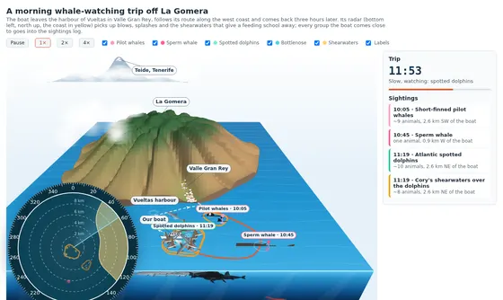
chart · radar scopeA boat trip out of Vueltas harbour: the route on the water, pilot whales, a diving sperm whale, spotted and bottlenose dolphins under shearwaters; the boat's radar shows the coast and the echoes, every encounter goes into a sightings log.
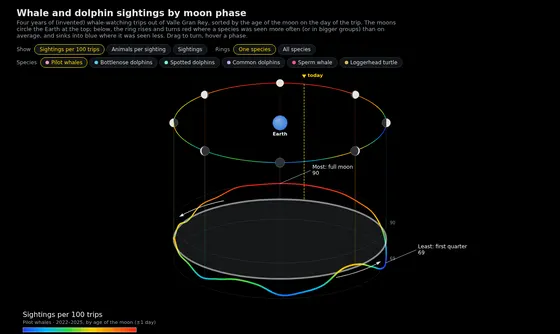
chart · phase ringMoons circling the Earth over a ring that rises and turns red where whales and dolphins were seen more often — one species or all stacked, sightings per trip, group size or counts, plus a table by the eight phases.
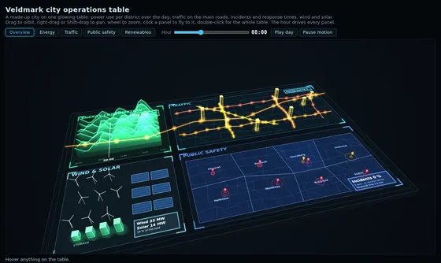
chart · holo tableA made-up city on a glowing table in 3D: power walls per district, congested roads with travelling cars, counter columns, incident pins over districts, turbines and solar — orbit, zoom, fly to a panel, scrub the hour.
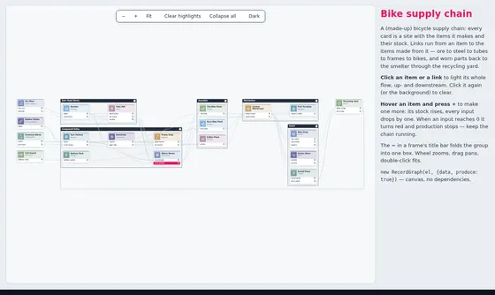
records · supply chainCards with item tables, links row to row, collapsible group frames; click an item to light its whole flow, press + to produce one unit from its inputs until something runs out.
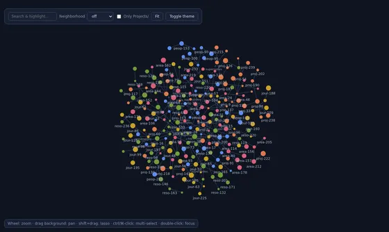
pan/zoom · style layer240 notes as coloured dots grouped by folder, typed edges with arrows, dashes and labels. Search highlight, n-hop neighborhood, lasso and multi-select, animated fit/focus, and a theme read from CSS variables. The render loop idles once the layout has cooled.
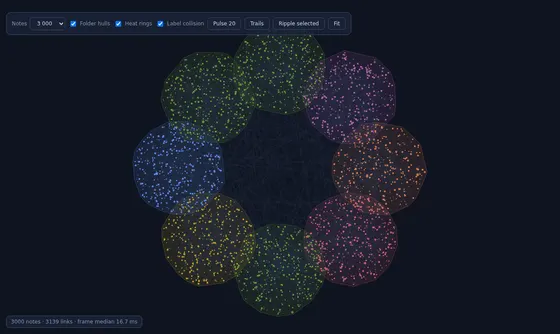
static layout · hulls · effects1 000–6 000 notes with a precomputed layout, padded folder hulls, heat rings, label collision avoidance and pulse / trail / ripple effects, with a frame-time readout.
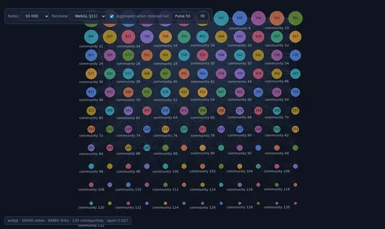
level of detail · clusters20 000–100 000 notes: communities as clusters when zoomed out (click one to zoom in), edges and labels only up close, viewport culling and batched dots.
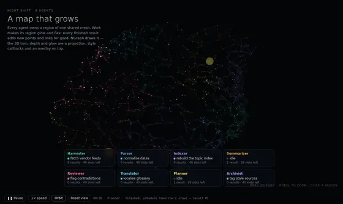
static layout · 3D projection · glow overlayEight simulated agents share one mesh of ~2 000 points: work makes a region glow and flex, each result grows new points for good. Turned in 3D by the page, drawn by NGraph through style callbacks and a blurred overlay.
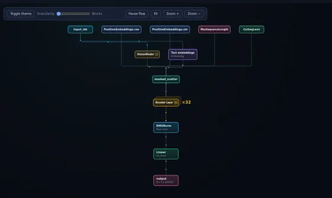
model view · pan/zoomAn interactive, pan/zoom block diagram of a neural-network model (hfviewer-style):
a granularity slider walks blocks → layer internals → projections → ops, with
accent-coded modules, ×N repeats, residual side-routes, animated
flow and a click detail panel.
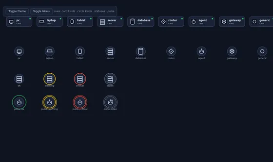
visualsEvery node kind, both shapes (circle & card), all four statuses and the pulse glow laid out side by side for a full visual reference.
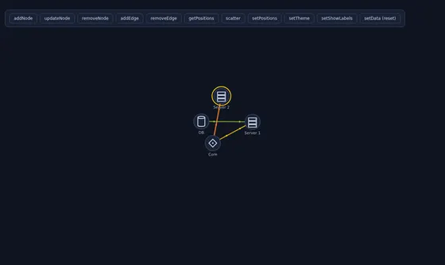
public APIAdd / update / remove nodes and edges at runtime, switch theme & labels,
and persist dragged positions via getPositions()/setPositions().
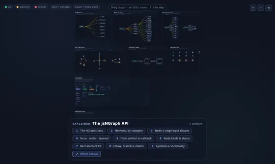
zoomable explainerA pan & zoom canvas that documents the whole library — architecture, method surface, data model, layouts and event flow — each section drawn with jsNGraph itself.
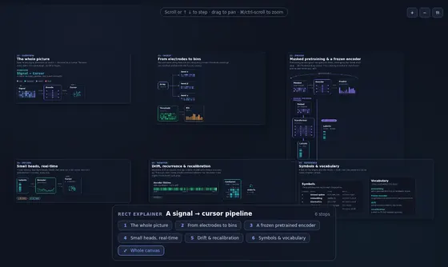
rect kit · scroll-storyA scrollytelling pipeline built only from RectBoard and rect
elements — boxes, charts, groups, connectors, matrix and reference panels; scroll to fly the camera.
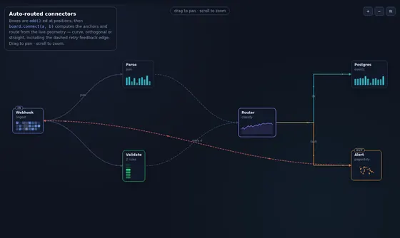
rect kit · auto-routePlace boxes, then board.connect(a, b) — connectors route themselves between
the boxes from their live geometry (curve / orthogonal / straight, plus a feedback edge).
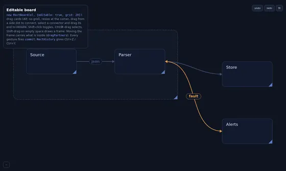
rect kit · editableRectBoard({editable: true}): drag, resize, connect from side anchors, reroute,
select, frames that carry their contents — every gesture a commit for undo.
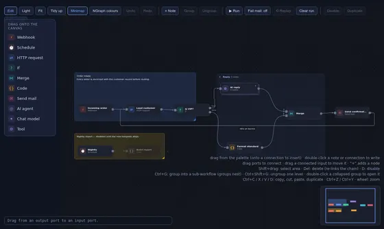
WorkflowEditor · DOM + SVGNodes with typed input/output ports, drag-to-connect with validation and a host veto, reroute by grabbing a connected input, undo/redo, and a view-only mode of the same widget.
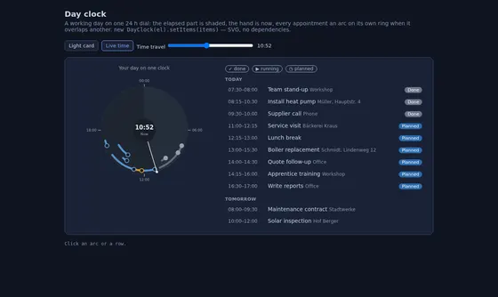
DayClock · SVG widgetA working day on one 24 h dial: elapsed time shaded, a hand for now, appointments as arcs on rings (overlaps get their own), coloured done / running / planned; click and hover events.
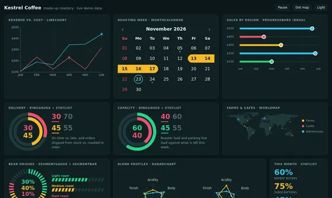
widgets · SVGRing and segment gauges, LED bars, draggable progress bars, a month calendar with a range pill, big KPI figures and an embedded world map (filled or dots) — next to the line and radar charts.
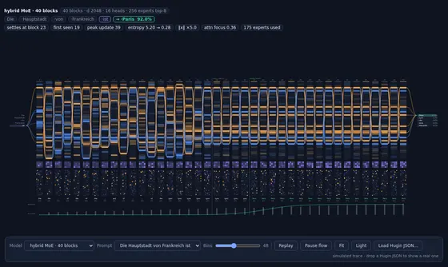
NetView · canvasA transformer compressed to fit the browser: residual bins, heads and experts per block, one prompt's active path laid over it, logit lens and where the answer settles measured per block.
npm run build, then open any of these files
directly in a browser — no dev server or bundler needed.